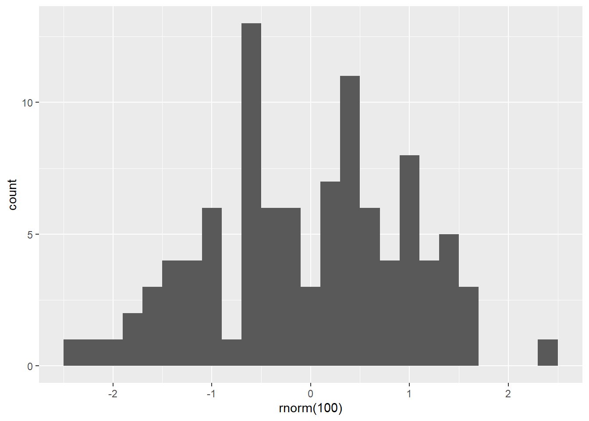
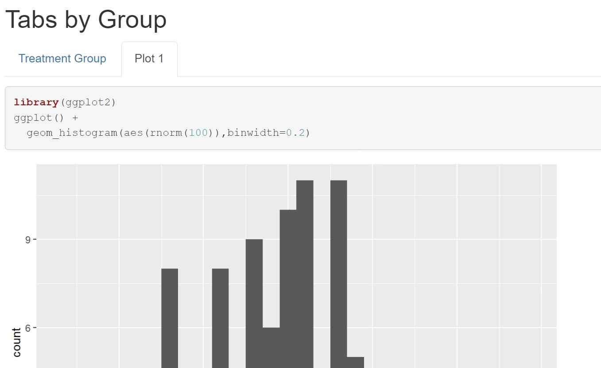

install.packages('rmarkdown')
install.packages('dplyr')
install.packages('knitr')R Markdown
Introduction
By now you have mastered the fundamentals of base R, visualizations, and data science!
R Markdown is a powerful format for quickly making high-quality reports of your analysis. You can embed code and all kinds of output, including graphs, and output them to a Word Document, PDF or website. In fact, this entire book was written in R Markdown!
Here we’ll cover just the basics, but a complete guide to R Markdown is available online from Yihui Xie, J. J. Allaire and Garrett Grolemund (https://bookdown.org/yihui/rmarkdown/). You can also check out the R Markdown documents that we use to make our tutorial websites on our GitHub Pages (the website files have .html extension and the R Markdown files have the same name with .Rmd extensions):
- Colautti Lab Resources Website: (https://colauttilab.github.io/)
- Colautti Lab GitHub Repository: (https://github.com/ColauttiLab/ColauttiLab.github.io)
Setup
Before beginning this tutorial, make sure you have installed these packages:
These should be installed with R Studio, but you may want to re-install them if you are working with an older version. You may have to quit and restart R Studio a few times during this process.
Cheat Sheet
There is a very handy 2-page ‘cheat sheet’ https://www.rstudio.com/wp-content/uploads/2015/02/rmarkdown-cheatsheet.pdf, which you can also access through R Studio under the Help menu: Help -> Cheatsheets. There are several other links here too, including ggplot and dplyr.
Create
So far, you’ve been working through the command line in a .R program file. As discussed in the R Fundamentals Chapter, the benefit of programming in a .R file is that we can share the program and associated files with other computers, including high-performance servers.
An R Markdown file is another special text file, with a .Rmd extension. It’s useful for generating reports with embedded code and visualizations. I use it as a virtual notepad when analyzing new data, and later convert it to Online Supplementary Material for published papers. The utility of the .Rmd file is easiest to understand by example.
Because an R Markdown file is just a text file with a .Rmd extension, we could just make a new text file and save it with the .Rmd extension. However, in RStudio, we can make a new R markdown file from the menu: File-> New-> R Markdown
Choose Document from the left-hand side menu, give it a title, and make sure html is selected.
Then click OK
Very few elements are needed for a basic markdown file, and examples of these elements are provided within the R Markdown file that R Studio sets up for you.
At the top of this window is a little icon that says ‘Knit’. The Knit icon, knits together your text file into a rendered html document.
Try clicking the knit icon to generate a report using the default text in the R Markdown file. Note that you may have to save a copy of your R Markdown file first. A new file will open in a web browser. Take a moment to compare the output file with the input R Markdown.
If you want to output this as a pdf file, then you can simply choose Print, and then Print to PDF in your web browser. You can also make pdf files directly from R Studio, but you might run into problems depending on your file content and format.
We’ll stick with the html version for now, and walk through some of the main components available to you.
YAML Header
Every R Markdown file starts with a YAML header, which contains some basic information about the file. A YAML header is generated automatically when you make a new .Rmd file in RStudio, but not all elements are needed. Depending on what options you choose, it might look something like this:
---
title: "Untitled"
author: "Robert I. Colautti"
date: "January 20, 2019"
output: html_document
---There are other options available for YAML, and you can includes a separate _output.yml to set other aspects of the layout.
Here are some additional formatting options. Replace the output: html_document line above:
output:
html_document: # Add options for html output
toc: true # Add table of contents (TOC)
number_sections: true # Add section numbers
toc_float: # Have TOC floating at the side
collapsed: false # Expand subsectionsMarkdown Elements
The Markdown in R Markdown refers to the Markdown protocol (https://en.wikipedia.org/wiki/Markdown)
This is a non-proprietary system that was designed to quickly and easily encode formatted documents and websites in a simple text document.
The main advantage of R Markdown (.Rmd) over regular Markdown (.md) is the ability to easily print, format, and execute embedded R code for graphs, tables, and calculations.
We’ll look at some basic Markdown elements and then we’ll see how to embed R code for professional, reproducible reports.
Basic elements
Plain text
Plain text is converted into paragraph format.
To start a new paragraph, press enter twice. This is important – if you only press enter once, then the two paragraphs will knit together into the same paragraph.
Similarly, if you inlcude more than two lines between paragraphs, these will be ignored when you render the R Markdown document.
Try adding paragraphs of text separated by pressing enter 1, 2 and 3 times. Then, knit to html to see how these are rendered in the final output.
Formatted Text
You can format text with * or _
*italics* or _italics_: italics
**bold** or __bold__: bold
Use greater-than sign for block quotes, eg. > TIP: quote
TIP: quote
Headers
Add headers with up to six hash marks (#). Each additional # denotes a sub-heading of the previous (sub)heading.
# Header 1
## Sub-Header = Header 2
### Sub-Sub Header = Header 3
#### Sub-Sub-Sub Header = Header 4
Other Elements
Use two dashes (--) for short–dash (a.k.a. ‘n-dash’).
Use three dashes (---) for long — dash (a.k.a. m-dash).
Links
Links have a special format. The text you want the user to see goes in square brackets, followed immediately by the file or html link in regular brackets, with no space in between. You can use both web links and relative path links.
[Colautti Lab Website](https://colauttilab.github.io/)
This should produce a link if you are reading this electronically:
You can also use this with relative path names, for example to link a file in a folder called images inside of the project folder:
[Linked .png file](./images/ColauttiLabLogo.png)
Again, this should produce a link if you are reading this electronically. However, you will get an error if you try to include this in your R Markdown file.
Question: Why will you get an error?
Answer: This file is not in your working directory. You will need to create an image and save it as ColauttiLabLogo.png inside a directory called images, which is also inside of the working directory that contains your .Rmd file.
Images
Instead of linking, you can embed the image directly by adding an exclamation point. The text in square brackets becomes the figure caption.
:
Note that R Markdown added a figure number for me, based on the chapter and the number of previous images. This doesn’t include the graphs that were created with embedded R code, only images that were embedded with .
Lists
Lists are easy to create, simply start a line with * or + for unordered lists or a number for ordered lists. Add tab characters for sub-lists:
+ Unordered list item 1
* Item 2
+ sub item 2.1
* sub item 2.2
* Item 3 - Unordered list item 1
- Item 2
- sub item 2.1
- sub item 2.2
- Item 3
1. Ordered list item 1
2. Item 2
+ sub item 2.1
* sub item 2.2
3. Item 3 - Ordered list item 1
- Item 2
- sub item 2.1
- sub item 2.2
- Item 3
The fun thing about ordered lists is the numbers you use don’t really matter – R Markdown will automatically start at 1 and increase for each item.
1. Ordered list item 1
1. Item 2
+ sub item 2.1
* sub item 2.2
1. Item 3 - Ordered list item 1
- Item 2
- sub item 2.1
- sub item 2.2
- Item 3
This is a nice feature in early drafts of your R Markdown, to which you might later add, rename, or reorganize the order. You can just leave the numbers and not waste effort renumber each time.
Tables
Tables are added using a line of horizontal dashes to separate the title of the table, then a row of header names separated by pipes to define the header row. Finally, we add another line of dashes with pipes to indicate the relative column widths. The data goes underneath, with pipes separating each column.
Tables
-----------------------
Date | Length | Width
------|---------|------
09/09/09 | 14 | 27
10/09/09 | 15 | 29
11/09/09 | 16 | 31Produces this output:
Tables
| Date | Length | Width |
|---|---|---|
| 09/09/09 | 14 | 27 |
| 10/09/09 | 15 | 29 |
| 11/09/09 | 16 | 31 |
Now that we have written some basic markdown elements, we can generate our R markdown report to see what they look like. Click on the knit button and compare the input with what you have typed in your R mardown file.
Embed R Code
You can format text to look like code using the back-tick character.
# `Use single tick mark to invoke code formatted text.`The Back Tick is a strange looking character usually located on the same key as the tilde (~) on English keyboards. Don’t confuse the back tick with the single quotation mark.
You can incorporate blocks of R code using three back ticks with r in curly brackets. Write some code, then add three more tick marks to signal the end of the code chunk. By defaule, your code will run when you convert your R Markdown to html, showing the output. This is a great way to include graphs and the output of statistical models.
# ```{r}
# <your code goes here>>
# ```Ctl-Alt-i is a nice shortcut in R Studio for adding code chunks quickly.
Code Chunk Names
You can name your code chunks by adding a name right after the r separated only by a space. Naming code chunks is very handy for troubleshooting. When you knit your file, the name of each chunk is listed in the Render tab in R Studio. If there is an error, you can see which code chunk is causing the error. Note that the name cannot contain spaces, and it can be followed by a comma to specify options for the code chunk.
# ```{r code-chunk-name, eval=F}`Code Chunk Parameters
You can use different options for your R code chunks, as shown on the R Markdown cheat sheet. The default is to both print the code AND show the output, but these can be changed with options. The three options I use most commonly are:
eval=F– Don’t evaluate the code. The code will be shown, but it won’t be run so no objects or output will be created.echo=F– Don’t echo the code. Don’t show the code, but run it and include any output, plots, messages and warnings.include=F– Don’t include the code in the rendered document. Run the code to create any objects and load libraries, but don’t show the code or any output, plots, messages or warnings.
Dynamic Tables
Making tables from data is a bit more complicated. For example, if we wanted to summarize the FallopiaData.csv data, we could read in the file and then summarize with dplyr as we did in the Data Science Chapter.
library(dplyr)Warning: package 'dplyr' was built under R version 4.3.2Fallo<-read.csv(
"https://colauttilab.github.io/RCrashCourse/FallopiaData.csv")
SumTable<-Fallo %>%
group_by(Taxon,Scenario,Nutrients) %>%
summarize(Mean=mean(Total), SD=sd(Total)) %>%
arrange(desc(Mean))
print(SumTable)# A tibble: 10 × 5
# Groups: Taxon, Scenario [10]
Taxon Scenario Nutrients Mean SD
<chr> <chr> <chr> <dbl> <dbl>
1 bohem high high 60.3 8.68
2 japon gradual high 59.7 9.57
3 bohem fluctuations high 58.4 9.20
4 bohem extreme high 58.3 7.34
5 bohem gradual high 57.5 9.34
6 japon extreme high 57.2 10.9
7 japon high high 56.4 8.20
8 japon fluctuations high 56.4 13.7
9 japon low low 52.0 8.29
10 bohem low low 48.0 8.86The output is legible but not very attractive for a final report. To make it look better, we can use the kable function from the knitr package:
library(knitr)Warning: package 'knitr' was built under R version 4.3.2kable(SumTable, caption = "Summary Table")| Taxon | Scenario | Nutrients | Mean | SD |
|---|---|---|---|---|
| bohem | high | high | 60.28091 | 8.677075 |
| japon | gradual | high | 59.72917 | 9.565376 |
| bohem | fluctuations | high | 58.36455 | 9.202334 |
| bohem | extreme | high | 58.30917 | 7.337015 |
| bohem | gradual | high | 57.46154 | 9.338311 |
| japon | extreme | high | 57.23643 | 10.903133 |
| japon | high | high | 56.44833 | 8.204091 |
| japon | fluctuations | high | 56.43692 | 13.724906 |
| japon | low | low | 52.02917 | 8.287938 |
| bohem | low | low | 47.98077 | 8.862164 |
The output of this code is shown in the Summary Table. Contrast the formatting from the kable() function with the standard R output from print().
Embed Graphs
Use R code to embed graphs.
ggplot() +
geom_histogram(aes(rnorm(100)), binwidth=0.2)
Content as Tabs
Rendering an html has additional features that won’t show up in a pdf. The code below will produce tabs in your knit html file.
## Tabs by Group {.tabset}
### Treatment Group
1. Treatment 1 explanation
2. Treatment 2 explanation
3. Treatment 3 explanation
### Histogram
#```{r}
#library(ggplot2)
#ggplot() +
# geom_histogram(aes(rnorm(100)),binwidth=0.2)
#```The output of this code is shown in the figure.
{fig-alt=“Tabs created in html using {.tabset} with ## headers. The”Plot 1” tab contains embedded R code to produce a histogram graph. Both the code and graph are shown by default”}
Equations
Insert equations using LaTeX equations. LaTeX is a system for converting basic text files to formated documents.
Use single dollar signs for in-line equations, like $Y = X$, which will print as \(Y = X\) on the same line as the text.
- Use double dollar signs on a new line for full-line equations, like
$$Y = X$$:
\[Y = X \]
which isolates the equation on its own line, and centers it.
You can use a variety of Greek letters by using the backslash character \. For upper-case Greek letters, just use an upper-case letter in the spelling. For example:
\lambda(\(\lambda\)) OR\Lambda(\(\Lambda\))\gamma(\(\gamma\)) OR\Gamma(\(\Gamma\))\delta(\(\delta\)) OR\Delta(\(\Delta\))
Omicron can be \omicron or simply the letter o, with no backslash o (\(o\)). Note that some LaTeX characters, like omicron, do not have capital versions (e.g., \Omicron does not produce a Greek character).
There are numerous other options but below is a quick rundown of some of the commonly used scripts.
| Script | Description | Code | Example |
|---|---|---|---|
\infty |
Infinity | \infty |
\(\infty\) |
_ |
Subscript | X_i |
\(X_i\) |
^ |
Superscript | X^2 |
\(X^2\) |
' |
First order derivative | f'(x) |
\(f'(x)\) |
'' |
Second order derivative | s'(x) |
\(s'(x)\) |
\sim |
Predict | Y \sim X |
\(Y \sim X\) |
\times |
Multiply | X \times Y |
\(X \times Y\) |
\pm |
Plus or minus | X \pm Y |
\(X \pm Y\) |
\neq |
Note equal | X \neq Y |
\(X \neq Y\) |
\leq |
Less than or equal | X \leq Y |
\(X \leq Y\) |
\geq |
Greater than or equal | X \geq Y |
\(X \geq Y\) |
{} |
Group together | X_{subscript} |
\(X_{subscript}\) |
\sqrt |
Square root | \sqrt{x^2y^2} |
\(\sqrt{x^2y^2}\) |
\frac |
Fraction | \frac{X+1}{X-1} |
\(\frac{X+1}{X-1}\) |
\sum |
Sum | \sum_{x=1}^{K} |
\(\sum_{x=1}^{K}\) |
\prod |
Product | \prod_{x=1}^{K} |
\(\prod_{x=1}^{K}\) |
\int |
Integral | \int_{0}^{\infty} |
\(\int_{0}^{\infty}\) |
\lim |
Limit | \lim_{x \to \infty} |
\(\lim_{x \to \infty}\) |
Note in particular, the use of curly brackets to group items together in superscripts, subscripts, fractions and square root. Also note the simulate (\sim) character, which is the tilde (~) used in statistical models and other R functions like facet_grid() and aggregate().
Here are some more sophisticated examples to show how to create more complex equations. Again, try reproducing these in R markdown. If you don’t get the same output, then check to see what is different with your code.
$$Y_i \sim \alpha + \beta_1 X_i + \epsilon_i$$ will produce a linear model equation:
\[Y_i \sim \alpha + \beta_1 X_i + \epsilon_i\]
and
$$sum_{n=1}^{\infty} 2^{-n} = 1$$will produce:
\[\sum_{n=1}^{\infty} 2^{-n} = 1\]
Note the use of special characters with the backslash \, along with subscripts _ and superscripts ^ with text in curly brackets {}.
That’s all you need to know to produce professional reports with R and R Markdown!
R Notebooks
R Notebook files are a unique type of R Markdown file, but include subtle differences that probably won’t matter much to you at this point in your coding journey. You could create a notebook file in similar ways to R markdown, the easiest being to select File --> New File --> R Notebook from the R Studio menu. However, I suggest you don’t, for reasons that will become clear below.
Saving an R notebook file adds the extension .nb to tell R Studio that it’s a notebook file. For example, if you had an R markdown file called MyAnalysis.Rmd the R notebook version would save as MyAnalysis.Rmd.nb. Additionally, an html file is created whenever you save the notebook file, whereas you have to manually ‘knit’ an R markdown file to produce an html output.
When you knit a .Rmd document, you re-run all of the code, whereas the .Rmd.nb only updates the code that has changed. This can cause confusion if you change one part of the code but forget to update it, whereas knitting the whole document is a safer approach for new coders, and established coders like me who are very prone to typos and other errors. The disadvantage of knitting the whole document each time is that it takes longer. However, you can also break up a large analysis into separate Rmd files. There is also a better alternative to notebooks, as described in the next section.
Quarto
Quarto is a recent addition to R Studio that also is based in R markdown but has a number of additional features. Again, I suggest you avoid using at this point because it has features that hide the underlying R Markdown code, which will make it harder for you to remember. As with R Markdown and R Notebooks, you can create a quarto file from the File --> New File menu. However, you have two types of Quarto files: Documents and Presentations.
Although they are based in R Markdown, they have additional commands that make quarto files different enough to get their own file extension: .qmd instead of .Rmd. The main advantage of Quarto is that it provides real-time rendering of the document inside of the R Studio window. When you open a Quarto file in R Studio, you will see options for Source and Visual at the top of the text editor window. Source shows the underlying code, whereas Visual gives the real-time document rendering. This means that you get an idea of the format and appearance of the document without having to save or knit the file each time.
At this stage of your learning, I suggest you avoid using Quarto and focus on R Markdown. Once you master R Markdown and the rest of this book, then you might want to move to Quarto and learn the additional coding options. At least for now, avoid using the Visual option with real-time rendering while you are coding a document. If you aren’t seeing the underlying code, then you are going to have trouble learning and retaining it.
My advice at this stage is to keep it simple. Focus on learning R Markdown first. As you get more comfortable coding, you could move to more advanced tools like Quarto.